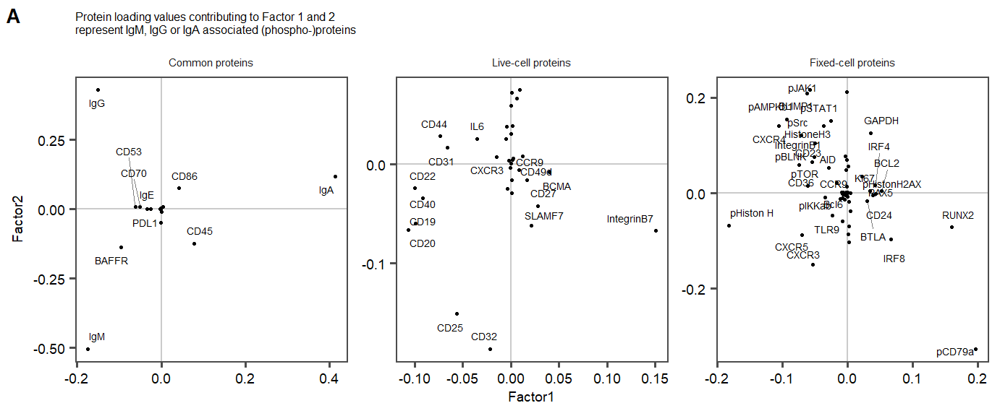
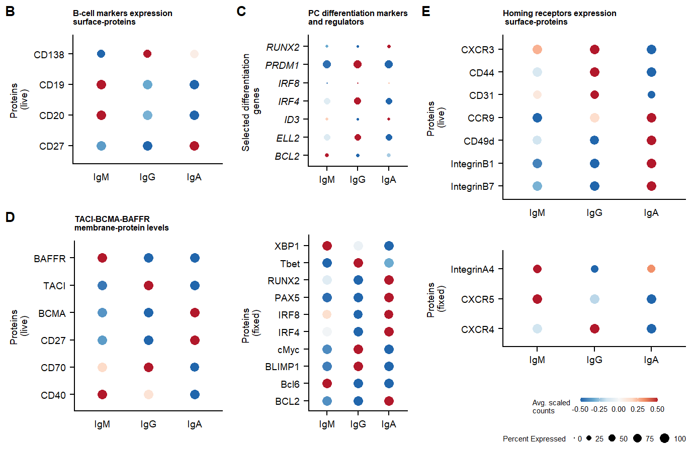
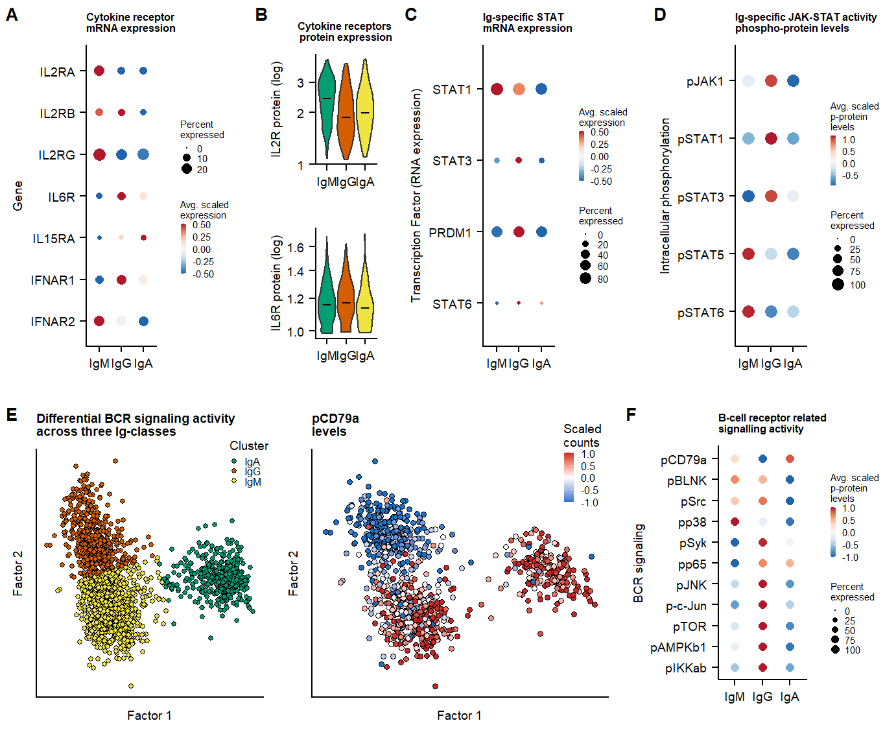
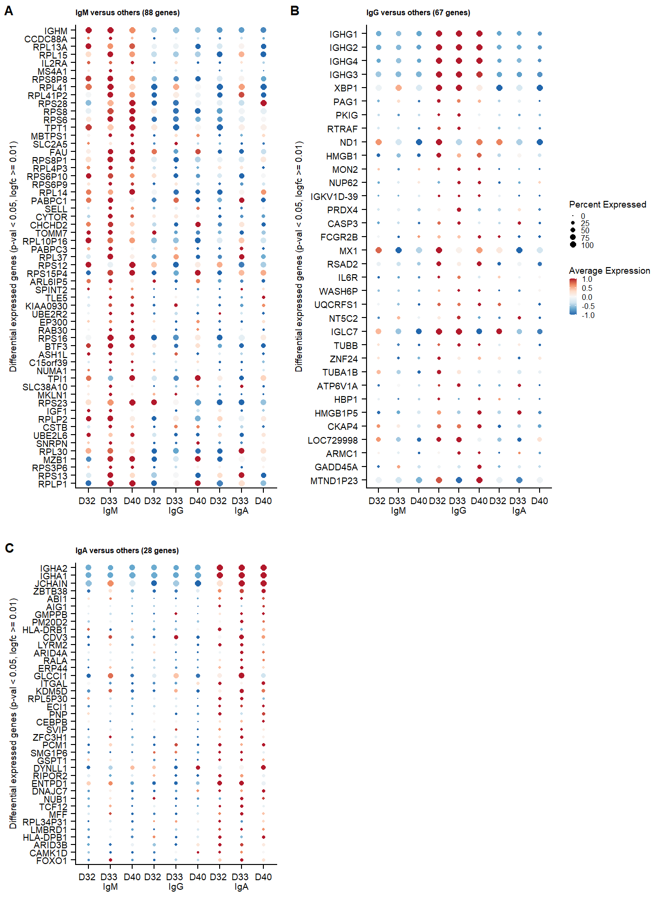

Last updated: 2023-01-17
Checks: 7 0
Knit directory:
Multimodal-Plasmacell_manuscript/
This reproducible R Markdown analysis was created with workflowr (version 1.6.2). The Checks tab describes the reproducibility checks that were applied when the results were created. The Past versions tab lists the development history.
Great! Since the R Markdown file has been committed to the Git repository, you know the exact version of the code that produced these results.
Great job! The global environment was empty. Objects defined in the global environment can affect the analysis in your R Markdown file in unknown ways. For reproduciblity it’s best to always run the code in an empty environment.
The command set.seed(20211005) was run prior to running
the code in the R Markdown file. Setting a seed ensures that any results
that rely on randomness, e.g. subsampling or permutations, are
reproducible.
Great job! Recording the operating system, R version, and package versions is critical for reproducibility.
Nice! There were no cached chunks for this analysis, so you can be confident that you successfully produced the results during this run.
Great job! Using relative paths to the files within your workflowr project makes it easier to run your code on other machines.
Great! You are using Git for version control. Tracking code development and connecting the code version to the results is critical for reproducibility.
The results in this page were generated with repository version 95e922e. See the Past versions tab to see a history of the changes made to the R Markdown and HTML files.
Note that you need to be careful to ensure that all relevant files for
the analysis have been committed to Git prior to generating the results
(you can use wflow_publish or
wflow_git_commit). workflowr only checks the R Markdown
file, but you know if there are other scripts or data files that it
depends on. Below is the status of the Git repository when the results
were generated:
Ignored files:
Ignored: .Rhistory
Ignored: .Rproj.user/
Ignored: analysis/cellstate_sidetest.Rmd
Ignored: analysis/hallmarks2.Rmd
Ignored: analysis/supplements.Rmd
Ignored: data/Seq2Science/
Ignored: data/azimuth_PBMCs/
Ignored: data/azimuth_bonemarrow/
Ignored: data/citeseqcount_htseqcount.zip
Ignored: data/genelist.plots.diffmarkers.txt
Ignored: data/genelist.plots.diffmarkers2.txt
Ignored: data/raw/
Ignored: data/supplementary/
Ignored: output/MOFA_analysis_Donorgroup.hdf5
Ignored: output/MOFA_analysis_Donorgroup.rds
Ignored: output/MOFA_analysis_Donorgroup_clustered.rds
Ignored: output/MOFA_analysis_Donorgroup_noIg.hdf5
Ignored: output/MOFA_analysis_Donorgroup_noIg2.hdf5
Ignored: output/extra plots.docx
Ignored: output/paper_figures/
Ignored: output/seu.fix_norm.rds
Ignored: output/seu.fix_norm_cellstate.rds
Ignored: output/seu.fix_norm_plasmacells.rds
Ignored: output/seu.live_norm.rds
Ignored: output/seu.live_norm_cellstate.rds
Ignored: output/seu.live_norm_plasmacells.rds
Ignored: output/seu.live_norm_plasmacells_RNA.rds
Ignored: output/top-PROT-loadings_IgA.tsv
Ignored: output/top-PROT-loadings_IgG.tsv
Ignored: output/top-PROT-loadings_IgM.tsv
Ignored: output/top-gene-loadings_IgA.tsv
Ignored: output/top-gene-loadings_IgG.tsv
Ignored: output/top-gene-loadings_IgM.csv
Ignored: output/top-gene-loadings_IgM.tsv
Unstaged changes:
Modified: .gitignore
Modified: CITATION.bib
Note that any generated files, e.g. HTML, png, CSS, etc., are not included in this status report because it is ok for generated content to have uncommitted changes.
These are the previous versions of the repository in which changes were
made to the R Markdown (analysis/hallmarks.Rmd) and HTML
(docs/hallmarks.html) files. If you’ve configured a remote
Git repository (see ?wflow_git_remote), click on the
hyperlinks in the table below to view the files as they were in that
past version.
| File | Version | Author | Date | Message |
|---|---|---|---|---|
| Rmd | 95e922e | Jessie van Buggenum | 2023-01-17 | final docs |
seu.fix <- readRDS( file = "output/seu.fix_norm_plasmacells.rds")
seu.fix <- SetIdent(seu.fix,value = "IgClass")
Idents(seu.fix) <- factor(x = Idents(seu.fix), levels = c("IgM", "IgG", "IgA"))
seu.live <- readRDS(file = "output/seu.live_norm_plasmacells.rds")
seu.live <-SetIdent(seu.live,value = "IgClass")
Idents(seu.live) <- factor(x = Idents(seu.live), levels = c("IgM", "IgG", "IgA"))To explore differences between three Ig-classes, we analyse protein and gene weights from the MOFA model and determine differential expressed genes or proteins.
# Read in the MOFA analysis file
mofa <- readRDS(file= "output/MOFA_analysis_Donorgroup_clustered.rds")
### Get all weights
weights.RNA <- get_weights(mofa, views = "RNA",as.data.frame = TRUE)
weights.PROT.fix <- get_weights(mofa, views = "PROT.fix",as.data.frame = TRUE) %>%
mutate(feature = gsub('.{2}$',x = feature, replacement = '') )
weights.PROT.live <- get_weights(mofa, views = "PROT.live",as.data.frame = TRUE) %>%
mutate(feature = gsub('.{2}$',x = feature, replacement = '') )
weights.PROT.common <- get_weights(mofa, views = "PROT.common",as.data.frame = TRUE)
weights.protein <- rbind(weights.PROT.common,weights.PROT.live,weights.PROT.fix) %>%
filter(factor == "Factor1" | factor == "Factor2") %>%
spread(factor,value)
# Define lists of B cell selection, homing selection and diffgenes and diffprots
list.Bcell.selection <- c("CD25", "CD32", "CD20","CD19", "CD22", "CD40", "CD86")
list.Bcell.selection.f <- c( "IgD", "CD23", "CD5", "CD70")
list.homing.selection.f <- c("CXCR4", "CXCR5","IntegrinA4")
list.homing.selection <- c("IntegrinB7", "IntegrinB1","CD49d", "CCR9", "CD31", "CD44","CXCR3")
list.Bcell.selection.new <- c( "CD138", "CD38", "CD27", "CD20","CD19")
# Read in the genelist for plots
genelist_plots_diffmarkers <- read_delim("data/genelist.plots.diffmarkers2.txt",
"\t", escape_double = FALSE, trim_ws = TRUE)
# Extract diffgenes and diffprots
list.genes.select.diffgenes <- c(unique(subset(genelist_plots_diffmarkers, modality == "RNA")$gene))
list.prot.select.diffprots <- c(unique(subset(genelist_plots_diffmarkers, modality == "PROT")$gene))
# Concatenate the lists
list.dotplot.prots <- c(list.prot.select.diffprots,list.homing.selection,list.homing.selection.f,list.Bcell.selection.f,list.Bcell.selection)
# Add a new column with feature to plot
weights.protein <- weights.protein %>%
mutate(features.toplot = ifelse(feature %in% c(list.dotplot.prots, "IgM", "IgA", "IgG"),as.character(feature),""))view.labs <- c("Common proteins", "Live-cell proteins", "Fixed-cell proteins")
names(view.labs) <- c("PROT.common", "PROT.live", "PROT.fix")
p.loadings.scatter.prot <-
ggplot(weights.protein, aes(Factor1, Factor2)) +
geom_hline(yintercept = 0, color = "grey", alpha = 0.8)+
geom_vline(xintercept = 0, color = "grey", alpha = 0.8)+
geom_point(size = 0.5) +
facet_wrap(~view,
labeller = labeller(view = view.labs),
scales = "free") +
theme_few()+
ggrepel::geom_text_repel( data = subset(weights.protein, Factor1 > 10^-2 ),
aes(x=Factor1, y=Factor2, label=feature), size=1.8, max.overlaps = Inf,
segment.size = 0.15,
segment.color = "grey50",
direction = "y",
hjust = 0)+
ggrepel::geom_text_repel(
data = subset(weights.protein, Factor1 < -10^-2& Factor2 >10^-2 ),
aes(x=Factor1, y=Factor2, label=feature), size=1.8, max.overlaps = Inf,
segment.size = 0.15,
segment.color = "grey50",
direction = "y",
hjust = 1
) +
ggrepel::geom_text_repel(
data = subset(weights.protein, Factor1 < -10^-2 & Factor2 <10^-2),
aes(x=Factor1, y=Factor2, label=feature), size=1.8, max.overlaps = Inf,
segment.size = 0.15,
segment.color = "grey50",
direction = "y",
hjust = 1
)+
add.textsize +
labs(title = "Protein loading values contributing to Factor 1 and 2\nrepresent IgM, IgG or IgA associated (phospho-)proteins ") +
theme(
panel.grid.major = element_blank(),
panel.grid.minor = element_blank())
# p.loadings.scatter.prottopposrna.factor1.IgA <- weights.RNA %>%
spread(factor, value) %>%
filter(Factor1 >= 10^-8) %>%
select(c(feature, Factor1, Factor2)) %>%
mutate(sortFactor1 = Factor1) %>%
arrange(-sortFactor1)
rownames(topposrna.factor1.IgA) <- topposrna.factor1.IgA$feature
topposPROT.fix.factor1.IgA <- weights.PROT.fix %>%
spread(factor, value) %>%
filter(Factor1 >= 10^-8) %>%
arrange(-Factor1)
rownames(topposPROT.fix.factor1.IgA) <- topposPROT.fix.factor1.IgA$feature
topposPROT.live.factor1.IgA <- weights.PROT.live %>%
spread(factor, value) %>%
filter(Factor1 >= 10^-8) %>%
arrange(-Factor1)
rownames(topposPROT.live.factor1.IgA) <- topposPROT.live.factor1.IgA$feature
topposPROT.common.factor1.IgA <- weights.PROT.common %>%
spread(factor, value) %>%
filter(Factor1 >= 10^-8) %>%
arrange(-Factor1)
rownames(topposPROT.common.factor1.IgA) <- topposPROT.common.factor1.IgA$feature
loadings.prot.IgA <- rbind(topposPROT.fix.factor1.IgA,topposPROT.live.factor1.IgA,topposPROT.common.factor1.IgA)
loadings.prot.IgA <- arrange(loadings.prot.IgA, -Factor1)topnegrna.factor2.IgM <- weights.RNA %>%
spread(factor, value) %>%
filter(Factor1 <= -10^-8) %>%
filter(Factor2 <= -10^-8) %>%
select(c(feature, Factor1, Factor2)) %>%
mutate(sortminusFactor1times2 = -(Factor2*Factor1)) %>%
arrange(sortminusFactor1times2)
rownames(topnegrna.factor2.IgM) <- topnegrna.factor2.IgM$feature
##filter for not IgA
##filter for not IgA
#topnegrna.factor2.IgM <-topnegrna.factor2.IgM[topnegrna.factor2.IgM$feature %in% topnegrna.factor1.IgMIgG$feature,]
topnegPROT.fix.factor2.IgM <- weights.PROT.fix %>%
spread(factor, value) %>%
filter(Factor1 <= -10^-7) %>%
filter(Factor2 <= -10^-7) %>%
arrange(Factor2)
rownames(topnegPROT.fix.factor2.IgM) <- topnegPROT.fix.factor2.IgM$feature
topnegPROT.live.factor2.IgM <- weights.PROT.live %>%
spread(factor, value) %>%
filter(Factor1 <= -10^-7) %>%
filter(Factor2 <= -10^-7) %>%
arrange(Factor2)
rownames(topnegPROT.live.factor2.IgM) <- topnegPROT.live.factor2.IgM$feature
topnegPROT.common.factor2.IgM <- weights.PROT.common %>%
spread(factor, value) %>%
filter(Factor1 <= -10^-7) %>%
filter(Factor2 <= -10^-7) %>%
arrange(Factor2)
rownames(topnegPROT.common.factor2.IgM) <- topnegPROT.common.factor2.IgM$feature
loadings.prot.IgM <- rbind(topnegPROT.fix.factor2.IgM,topnegPROT.live.factor2.IgM,topnegPROT.common.factor2.IgM)
loadings.prot.IgM <- arrange(loadings.prot.IgM, -(Factor2*Factor1) )
topposrna.factor2.IgG <-weights.RNA %>%
spread(factor, value) %>%
filter(Factor1 <= -10^-8) %>%
filter(Factor2 >= 10^-8) %>%
select(c(feature, Factor1, Factor2)) %>%
mutate(sortFactor2timesminus1 = -(Factor2*-Factor1)) %>%
arrange(sortFactor2timesminus1)
rownames(topposrna.factor2.IgG) <- topposrna.factor2.IgG$feature
##filter for not IgA
#topposrna.factor2.IgG <-topposrna.factor2.IgG[topposrna.factor2.IgG$feature %in% topnegrna.factor1.IgMIgG$feature,]
topposPROT.fix.factor2.IgG <- weights.PROT.fix %>%
spread(factor, value) %>%
filter(Factor1 <= -10^-7) %>%
filter(Factor2 >= 10^-7) %>%
arrange(-Factor2)
rownames(topposPROT.fix.factor2.IgG) <- topposPROT.fix.factor2.IgG$feature
topposPROT.live.factor2.IgG <- weights.PROT.live %>%
spread(factor, value) %>%
filter(Factor1 <= -10^-7) %>%
filter(Factor2 >= 10^-7) %>%
arrange(-Factor2)
rownames(topposPROT.live.factor2.IgG) <- topposPROT.live.factor2.IgG$feature
topposPROT.common.factor2.IgG <- weights.PROT.common %>%
spread(factor, value) %>%
filter(Factor1 <= -10^-7) %>%
filter(Factor2 >= 10^-7) %>%
arrange(-Factor2)
rownames(topposPROT.common.factor2.IgG) <- topposPROT.common.factor2.IgG$feature
loadings.prot.IgG <- rbind(topposPROT.fix.factor2.IgG,topposPROT.live.factor2.IgG,topposPROT.common.factor2.IgG)
loadings.prot.IgG <- arrange(loadings.prot.IgG, -(Factor2*-Factor1))
loadings.prot.IgM <- select(loadings.prot.IgM, c(feature, view, Factor1, Factor2))
loadings.prot.IgG <- select(loadings.prot.IgG, c(feature, view, Factor1, Factor2))
loadings.prot.IgA <- select(loadings.prot.IgA, c(feature, view, Factor1, Factor2))
# write_tsv(loadings.prot.IgM, file = "output/top-PROT-loadings_IgM.tsv")
# write_tsv(loadings.prot.IgA, file = "output/top-PROT-loadings_IgA.tsv")
# write_tsv(loadings.prot.IgG, file = "output/top-PROT-loadings_IgG.tsv")# write_tsv(topnegrna.factor2.IgM, file = "output/top-gene-loadings_IgM.tsv")
# write_tsv(topposrna.factor1.IgA, file = "output/top-gene-loadings_IgA.tsv")
# write_tsv(topposrna.factor2.IgG, file = "output/top-gene-loadings_IgG.tsv")
list.genes.loadings.top20 <- rev(c(as.character(topnegrna.factor2.IgM$feature[1:20]),as.character(topposrna.factor1.IgA$feature[1:20]),as.character(topposrna.factor2.IgG$feature[1:20])))
list.genes.loadings.top200 <- rev(c(as.character(topnegrna.factor2.IgM$feature[1:200]),as.character(topposrna.factor2.IgG$feature[1:200]), as.character(topposrna.factor1.IgA$feature[1:200])))
list.genes.loadings.top200 <- rev(c(as.character(topnegrna.factor2.IgM$feature[1:200]),as.character(topposrna.factor2.IgG$feature[1:200]), as.character(topposrna.factor1.IgA$feature[1:200])))
list.genes.loadings.all <- rev(c(as.character(topnegrna.factor2.IgM$feature),as.character(topposrna.factor2.IgG$feature), as.character(topposrna.factor1.IgA$feature)))All.diff.PROT.live <- unique(c(as.character(loadings.prot.IgM$feature),as.character(loadings.prot.IgG$feature),as.character(loadings.prot.IgA$feature)))
All.diff.PROT.fix <- unique(c(as.character(loadings.prot.IgM$feature),as.character(loadings.prot.IgG$feature),as.character(loadings.prot.IgA$feature)))
p.dotplot.Bcell.markers.l <- DotPlot(seu.live,assay = "PROT",features = rev(sort((All.diff.PROT.live[All.diff.PROT.live %in%list.Bcell.selection.new] ))), cols = "RdBu",dot.scale = 3, scale.min = 0, scale = T, scale.by = "size", col.min = -0.5, col.max = 0.5)+coord_flip() +
labs(x = "Proteins \n(live)", y = "", title = "B-cell markers expression \nsurface-proteins") +
add.textsize +
theme(legend.position = "none",
legend.key.size = unit(2, 'mm'),
axis.ticks.x=element_blank(),
axis.text.y = element_text(angle=0, hjust=1))
p.dotplot.Bcell.markers.f <- DotPlot(seu.fix,assay = "PROT",features = rev(c(All.diff.PROT.fix[All.diff.PROT.fix%in%list.Bcell.selection.f] )) , cols = "RdBu",dot.scale = 3, scale.min = 0, scale = T, scale.by = "size", col.min = -0.5, col.max = 0.5)+coord_flip() +
labs(x = "Proteins (fixed)", y = "") +
add.textsize +
theme(legend.position = "none",
legend.key.size = unit(2, 'mm'),
axis.text.y = element_text(angle=0, hjust=1))
p.dotplot.gene.diff.gene <- DotPlot(seu.live,assay = "SCT",features =sort(unique(list.genes.loadings.all[list.genes.loadings.all %in%list.genes.select.diffgenes])) , cols = "RdBu",dot.scale = 3, scale.min = 0, scale.max = 100, scale = T, scale.by = "size", col.min = -0.5, col.max = 0.5)+coord_flip() +
labs(x = "Selected differentiation \ngenes", y = "", title = "PC differentiation markers \nand regulators") +
add.textsize +
theme(legend.position = "none",
axis.text.y = element_text(angle=0, hjust=1,face = "italic"),
legend.key.size = unit(2, 'mm'),
axis.text.x = element_text(angle=0, hjust=0.5),
legend.box="vertical", legend.margin=margin())
p.dotplot.gene.diff.prot.f <- DotPlot(seu.fix,assay = "PROT",features = sort((All.diff.PROT.fix[All.diff.PROT.fix%in%list.prot.select.diffprots])) , cols = "RdBu",dot.scale = 3, scale.min = 0, scale.max= 100, scale = T, scale.by = "size", col.min = -0.5, col.max = 0.5)+coord_flip() +
labs(x = "Proteins \n(fixed)", y = "", title = "") +
add.textsize +
theme(legend.position = "none",
legend.key.size = unit(2, 'mm'),
axis.text.y = element_text(angle=0, hjust=1))
p.dotplot.Diff.markers <- plot_grid(p.dotplot.gene.diff.gene,p.dotplot.gene.diff.prot.f, ncol = 1, rel_heights = c(1.15,1.35))
p.dotplot.prot.TACI <- DotPlot(seu.live,assay = "PROT",features = unique(c("CD40", "CD70", "CD27", "BCMA", "TACI","BAFFR")[c("CD40", "CD70", "CD27", "BCMA", "TACI","BAFFR") %in%All.diff.PROT.fix]) , cols = "RdBu",dot.scale = 3, scale.min = 0, scale = T, scale.by = "size", col.min = -0.5, col.max = 0.5)+coord_flip() +
labs(x = "Proteins \n(live)", y = "", title = "TACI-BCMA-BAFFR \nmembrane-protein levels") +
add.textsize +
theme(legend.position = "none",
legend.key.size = unit(2, 'mm'),
axis.ticks.x=element_blank(),
axis.text.y = element_text(angle=0, hjust=1))
p.dotplot.gene.homing.l <- DotPlot(seu.live,assay = "PROT",features = unique(list.homing.selection[list.homing.selection %in%All.diff.PROT.live]) , cols = "RdBu",dot.scale = 3, scale.min = 0, scale = T, scale.by = "size", col.min = -0.5, col.max = 0.5)+coord_flip() +
labs(x = "Proteins \n(live)", y = "", title = "Homing receptors expression \n surface-proteins") +
add.textsize +
theme(legend.position = "none",
legend.key.size = unit(2, 'mm'),
axis.ticks.x=element_blank(),
axis.text.y = element_text(angle=0, hjust=1))
p.dotplot.gene.homing.f <- DotPlot(seu.fix,assay = "PROT",features = list.homing.selection.f[list.homing.selection.f %in%All.diff.PROT.fix], cols = "RdBu",dot.scale = 3, scale.min = 0, scale = T, scale.by = "size", col.min = -0.5, col.max = 0.5)+coord_flip() +
labs(x = "Proteins \n(fixed)", y = "") +
theme(legend.position = "bottom",
legend.key.size = unit(2, 'mm'),
axis.text.x = element_text(angle=0, hjust=0.5),
legend.box="vertical", legend.margin=margin(),
axis.text.y = element_text(angle=0, hjust=1))+
add.textsize #
p.dotplot.Bcell.markers <- plot_grid(p.dotplot.Bcell.markers.l,p.dotplot.prot.TACI,labels = panellabels[c(2,4)], label_size = 10, ncol = 1,rel_heights = c(1,1.2))
p.dotplot.gene.homing.f <- addSmallLegend(p.dotplot.gene.homing.f, barwidth =4, barheight = 0.2, title_color = "Avg. scaled \ncounts", spaceLegend = 0.001)
p.dotplot.gene.homing<- plot_grid( p.dotplot.gene.homing.l,p.dotplot.gene.homing.f, ncol = 1, rel_heights = c(1.6,1.4), labels = panellabels[c(5)], label_size = 10) p.Fig3.row1 <- plot_grid(p.loadings.scatter.prot, labels = panellabels[c(1)], label_size = 10, ncol =1, rel_widths = c(1))
# ggsave(p.Fig3.row1, filename = "output/paper_figures/Fig3.A.pdf", width = 177, height = 80, units = "mm", dpi = 300, useDingbats = FALSE)
# ggsave(p.Fig3.row1, filename = "output/paper_figures/Fig3.A.png", width = 177, height = 80, units = "mm", dpi = 300)
p.Fig3.row2 <- plot_grid(p.dotplot.Bcell.markers,p.dotplot.Diff.markers,
p.dotplot.gene.homing, labels = c("",panellabels[c(3)]), label_size = 10, ncol =3, rel_widths = c(1,0.8,1.2))
# ggsave(p.Fig3.row2, filename = "output/paper_figures/Fig3.BCD.pdf", width = 177, height = 120, units = "mm", dpi = 300, useDingbats = FALSE)
# ggsave(p.Fig3.row2, filename = "output/paper_figures/Fig3.BCD.png", width = 177, height = 120, units = "mm", dpi = 300)p.Fig3.row1
p.Fig3.row2
## plots cytokinereceptors
cytokinerecept.list <- c("IL2RA", "IL2RB","IL2RG", "IL6R", "IL15RA", "IFNAR1", "IFNAR2")
p.dotplot.gene.cytokinerecept <- DotPlot(seu.live,assay = "SCT",features = c(rev(cytokinerecept.list)), cols = "RdBu",dot.scale = 3, scale.min = 0, scale = T, scale.by = "size", col.min = -0.5, col.max = 0.5)+coord_flip() +
labs(x = "Gene", y = "", title = "Cytokine receptor \nmRNA expression") +
add.textsize+
guides(size = guide_legend(title = "Percent \nexpressed"),color = guide_colorbar(title = "Avg. scaled\nexpression"))
#+ guides(size = "none",color = "none")
p.vln.prot.cytokinerecept.IL6R <- VlnPlot(seu.live, assay = "PROT",features = c("IL6"), pt.size = 0, cols = colors.clusters, ncol = 1, log = T) +
stat_summary(fun.y = median, geom='point', size = 2.5, colour = "black", shape = 95) &
labs(x = "", y = "IL6R protein (log)", title = "") &
add.textsize +
theme(legend.position = "none",
legend.key.size = unit(2, 'mm'),
axis.text.x = element_text(angle=0, hjust=0.5),
plot.title = element_blank())
p.vln.prot.cytokinerecept.IL2R <- VlnPlot(seu.live, assay = "PROT",features = c("CD25"), pt.size = 0, cols = colors.clusters, ncol = 1, log = T) &
stat_summary(fun.y = median, geom='point', size = 2.5, colour = "black", shape = 95) &
labs(x = "", y = "IL2R protein (log)", title = "Cytokine receptors \nprotein expression") &
add.textsize +
theme(legend.position = "none",
legend.key.size = unit(2, 'mm'),
axis.text.x = element_text(angle=0, hjust=0.5))
p.vln.prot.cytokinerecept <- p.vln.prot.cytokinerecept.IL2R/p.vln.prot.cytokinerecept.IL6R
p.cytokinerecept.levels <- p.dotplot.gene.cytokinerecept +p.vln.prot.cytokinerecept
#### JAKSTAT
toplot.prot <- c("pJAK1","pSTAT1", "pSTAT3","pSTAT5", "pSTAT6")
p.dotplot.JAKSTAT.PROT <- DotPlot(seu.fix,assay = "PROT",features = rev(toplot.prot), cols = "RdBu",dot.scale = 3, scale.min = 0, scale = T, scale.by = "size")+
coord_flip() +
labs(x = "Intracellular phosphorylation", y = "", title = "Ig-specific JAK-STAT activity \nphospho-protein levels") +
add.textsize +
guides(size = guide_legend(title = "Percent \nexpressed"),color = guide_colorbar(title = "Avg. scaled\np-protein\nlevels"))
toplot.RNA <- c("STAT1", "STAT3","PRDM1", "STAT6")
p.dotplot.JAKSTAT.RNA <- DotPlot(seu.live,assay = "SCT",features = rev(toplot.RNA), cols = "RdBu",col.min = -0.5,col.max = 0.5,dot.scale = 3, scale.min = 0, scale = T, scale.by = "size")+
coord_flip() +
labs(x = "Transcription Factor (RNA expression)", y = "", title = "Ig-specific STAT \nmRNA expression") +
add.textsize +
guides(size = guide_legend(title = "Percent \nexpressed"),color = guide_colorbar(title = "Avg. scaled\nexpression"))
#+ guides(size = "none",color = "none")
p.JAKSTAT <- p.dotplot.JAKSTAT.RNA +p.dotplot.JAKSTAT.PROT
#### BCR activity
p.MOFA.factors.cluster <- plot_factors(mofa,
factors =c(1:2),
color_by = "IgClass",
dot_size = 1.2
) +labs(x = "Factor 1", y = "Factor 2", title = "Differential BCR signaling activity \nacross three Ig-classes", color = "Ig-class") +
scale_fill_manual("Cluster",values= colors.clusters) +
add.textsize&
theme_half_open()&
theme(legend.position = c(0.85,0.95), legend.key.size = unit(2, 'mm')) &
theme(axis.text.x = element_blank(),
axis.text.y = element_blank(),
text = element_text(size=7), axis.ticks = element_blank(),
axis.text=element_text(size=7),
plot.title = element_text(size=7, face = "bold",hjust = 0))
p.MOFA.factors.CD79a <- plot_factors(mofa,
factors = c(1:2),
color_by = "pCD79a_f",dot_size = 1.2,show_missing = FALSE
) &
add.textsize &
labs(x = "Factor 1", y = "Factor 2", fill = "Scaled \ncounts", title = "pCD79a\nlevels") &
theme_half_open()&
theme(legend.position = c(0.85,0.95), legend.key.size = unit(2, 'mm')) &
theme(axis.text.x = element_blank(),
axis.text.y = element_blank(),
text = element_text(size=7), axis.ticks = element_blank(),
axis.text=element_text(size=7),
plot.title = element_text(size=7, face = "bold",hjust = 0)) &
scale_fill_gradient2( limits = c(-1, 1),low="dodgerblue3", mid="white", high="firebrick3", oob = scales::squish)
p.dotplot.BCR.sign.phospho <- DotPlot(seu.fix,assay = "PROT", features = rev(c("pCD79a", "pBLNK", "pSrc", "pp38","pSyk","pp65", "pJNK", "p-c-Jun", "pTOR", "pAMPKb1", "pIKKab")), cols = "RdBu",dot.scale = 2,scale.min = 0, scale.max = 100, scale = T, scale.by = "size", col.min = -1, col.max = 1)+
cowplot::theme_cowplot() +
coord_flip()+
add.textsize +
labs(x = "BCR signaling", y = "", title ="B-cell receptor related \nsignalling activity") +
theme(legend.position = "right", legend.key.size = unit(2, 'mm')) +
guides(size = guide_legend(title = "Percent \nexpressed"),color = guide_colorbar(title = "Avg. scaled\np-protein\nlevels"))p.cytokine_JAKSTAT <- plot_grid(
addSmallLegend(p.dotplot.gene.cytokinerecept, title_color = "Avg. scaled \nexpression"),
p.vln.prot.cytokinerecept,
addSmallLegend(p.dotplot.JAKSTAT.RNA, title_color = "Avg. scaled \nexpression"),
addSmallLegend(p.dotplot.JAKSTAT.PROT),
labels = c(panellabels[c(1:4)]), label_size = 10, ncol =4,rel_widths = c(1,0.6,1,1))
p.BCR <- plot_grid(p.MOFA.factors.cluster, p.MOFA.factors.CD79a,addSmallLegend(p.dotplot.BCR.sign.phospho), labels = c(panellabels[c(5)], "",panellabels[c(6:7)]), label_size = 10, ncol =3,rel_widths = c(1,1.25,1))
fig.4.signalling <- plot_grid(p.cytokine_JAKSTAT, p.BCR, labels = "", label_size = 10, ncol =1,rel_heights = c(1.2,1))
# ggsave(fig.4.signalling, filename = "output/paper_figures/Fig4.pdf", width = 177, height = 150, units = "mm", dpi = 300, useDingbats = FALSE)
# ggsave(fig.4.signalling, filename = "output/paper_figures/Fig4.png", width = 177, height = 150, units = "mm", dpi = 300)
fig.4.signalling
## RNA sign Differences
markers.OnevsAll <- FindAllMarkers(seu.live, assay = "SCT", logfc.threshold = 0.01, test.use = "wilcox", only.pos = T, verbose = T)
markers.OnevsAll <- filter(markers.OnevsAll, p_val <= 0.05)
markers.IgMvsAll <- filter(markers.OnevsAll, cluster == "IgM")
markers.IgAvsAll <- filter(markers.OnevsAll, cluster == "IgA")
markers.IgGvsAll <- filter(markers.OnevsAll, cluster == "IgG")
markers.IgAvsAll.list <- unique(replace(rownames(markers.IgAvsAll), rownames(markers.IgAvsAll)=="JCHAIN1", "JCHAIN"))
markers.OnevsAll.list <- unique(replace(rownames(markers.OnevsAll), rownames(markers.OnevsAll)=="JCHAIN1", "JCHAIN"))p.dotplot.diff.genes.all <- DotPlot(seu.live,assay = "SCT", features = rev(markers.OnevsAll.list), group.by = "clusters_pcaIG_named", cols = "RdBu",dot.scale = 2,scale.min = 0, scale.max = 100, scale = T, scale.by = "size", col.min = -1, col.max = 1) +
cowplot::theme_cowplot() +
coord_flip()+
add.textsize +
theme(legend.position = "right", legend.key.size = unit(2, 'mm'))
p.dotplot.diff.genes.IgM <- DotPlot(seu.live,assay = "SCT", features = rev(rownames(markers.IgMvsAll)),split.by = "donor", cols = "RdBu",dot.scale = 2,scale.min = 0, scale.max = 100, scale = T, scale.by = "size", col.min = -1, col.max = 1) +
cowplot::theme_cowplot() +
coord_flip()+
add.textsize +
theme(legend.position = "none", legend.key.size = unit(2, 'mm'))+
labs(title="IgM versus others (88 genes)",x="Differential expressed genes (p-val < 0.05, logfc >= 0.01)", y = "") +
scale_y_discrete(labels = c("D32 \n","D33 \nIgM", "D40","D32 \n","D33 \nIgG", "D40","D32 \n","D33 \nIgA", "D40"))
p.dotplot.diff.genes.IgA <- DotPlot(seu.live,assay = "SCT", features = rev(markers.IgAvsAll.list),split.by = "donor", cols = "RdBu",dot.scale = 2,scale.min = 0, scale.max = 100, scale = T, scale.by = "size", col.min = -1, col.max = 1) +
cowplot::theme_cowplot() +
coord_flip()+
add.textsize +
theme(legend.position = "none", legend.key.size = unit(2, 'mm'))+
labs(title="IgA versus others (28 genes)",x="Differential expressed genes (p-val < 0.05, logfc >= 0.01)", y = "")+
scale_y_discrete(labels = c("D32 \n","D33 \nIgM", "D40","D32 \n","D33 \nIgG", "D40","D32 \n","D33 \nIgA", "D40"))
p.dotplot.diff.genes.IgG <- DotPlot(seu.live,assay = "SCT", features = rev(rownames(markers.IgGvsAll)),split.by = "donor", cols = "RdBu",dot.scale = 2,scale.min = 0, scale.max = 100, scale = T, scale.by = "size", col.min = -1, col.max = 1) +
cowplot::theme_cowplot() +
coord_flip()+
add.textsize +
theme(legend.position = "right", legend.key.size = unit(2, 'mm'))+
labs(title="IgG versus others (67 genes)",x="Differential expressed genes (p-val < 0.05, logfc >= 0.01)", y = "")+
scale_y_discrete(labels = c("D32 \n","D33 \nIgM", "D40","D32 \n","D33 \nIgG", "D40","D32 \n","D33 \nIgA", "D40"))p.suppl.diff.genes <- plot_grid(p.dotplot.diff.genes.IgM,p.dotplot.diff.genes.IgG, p.dotplot.diff.genes.IgA,ncol = 2, rel_widths = c(1,1.3), rel_heights = c(1,0.7), labels = panellabels[1:3], label_size = 10)
# ggsave(p.suppl.diff.genes, filename = "output/paper_figures/p.suppl.diff.genes.pdf", width = 183, height = 320, units = "mm", dpi = 300, useDingbats = FALSE)
# ggsave(p.suppl.diff.genes, filename = "output/paper_figures/p.suppl.diff.genes.png", width = 183, height = 320, units = "mm", dpi = 300)
p.suppl.diff.genes
sessionInfo()R version 4.0.3 (2020-10-10)
Platform: x86_64-w64-mingw32/x64 (64-bit)
Running under: Windows 10 x64 (build 19044)
Matrix products: default
locale:
[1] LC_COLLATE=English_Netherlands.1252 LC_CTYPE=English_Netherlands.1252
[3] LC_MONETARY=English_Netherlands.1252 LC_NUMERIC=C
[5] LC_TIME=English_Netherlands.1252
attached base packages:
[1] parallel stats4 stats graphics grDevices utils datasets
[8] methods base
other attached packages:
[1] MOFA2_1.1.17 ggupset_0.3.0 RColorBrewer_1.1-2
[4] clusterProfiler_3.18.1 enrichplot_1.10.2 UCell_1.0.0
[7] data.table_1.14.2 scales_1.1.1 cowplot_1.1.1
[10] ggthemes_4.2.4 kableExtra_1.3.4 knitr_1.36
[13] org.Hs.eg.db_3.12.0 AnnotationDbi_1.52.0 IRanges_2.24.1
[16] S4Vectors_0.28.1 Biobase_2.50.0 BiocGenerics_0.36.1
[19] forcats_0.5.1 stringr_1.4.0 dplyr_1.0.7
[22] purrr_0.3.4 readr_2.1.0 tidyr_1.1.4
[25] tibble_3.1.5 ggplot2_3.3.5 tidyverse_1.3.1
[28] Matrix_1.3-4 SeuratObject_4.0.2 Seurat_4.0.2
[31] workflowr_1.6.2
loaded via a namespace (and not attached):
[1] utf8_1.2.2 reticulate_1.22 tidyselect_1.1.1
[4] RSQLite_2.2.8 htmlwidgets_1.5.4 BiocParallel_1.24.1
[7] grid_4.0.3 Rtsne_0.15 scatterpie_0.1.7
[10] munsell_0.5.0 codetools_0.2-16 ica_1.0-2
[13] future_1.23.0 miniUI_0.1.1.1 withr_2.5.0
[16] colorspace_2.0-2 GOSemSim_2.16.1 filelock_1.0.2
[19] highr_0.9 rstudioapi_0.13 ROCR_1.0-11
[22] tensor_1.5 DOSE_3.16.0 listenv_0.8.0
[25] labeling_0.4.2 MatrixGenerics_1.2.1 git2r_0.28.0
[28] polyclip_1.10-0 pheatmap_1.0.12 bit64_4.0.5
[31] farver_2.1.0 rhdf5_2.34.0 downloader_0.4
[34] rprojroot_2.0.2 basilisk_1.2.1 parallelly_1.29.0
[37] vctrs_0.3.8 generics_0.1.1 xfun_0.26
[40] R6_2.5.1 graphlayouts_0.7.2 rhdf5filters_1.2.1
[43] DelayedArray_0.16.3 fgsea_1.16.0 spatstat.utils_2.2-0
[46] cachem_1.0.6 assertthat_0.2.1 vroom_1.5.6
[49] promises_1.2.0.1 ggraph_2.0.5 gtable_0.3.0
[52] globals_0.14.0 goftest_1.2-2 tidygraph_1.2.0
[55] rlang_0.4.11 systemfonts_1.0.3 splines_4.0.3
[58] lazyeval_0.2.2 spatstat.geom_2.2-2 broom_0.7.10
[61] BiocManager_1.30.16 yaml_2.2.1 reshape2_1.4.4
[64] abind_1.4-5 modelr_0.1.8 backports_1.3.0
[67] httpuv_1.6.3 qvalue_2.22.0 tools_4.0.3
[70] ellipsis_0.3.2 spatstat.core_2.3-0 jquerylib_0.1.4
[73] ggridges_0.5.3 Rcpp_1.0.7 plyr_1.8.6
[76] basilisk.utils_1.2.2 rpart_4.1-15 deldir_1.0-2
[79] pbapply_1.5-0 viridis_0.6.2 zoo_1.8-9
[82] haven_2.4.3 ggrepel_0.9.1 cluster_2.1.0
[85] fs_1.5.0 magrittr_2.0.1 scattermore_0.7
[88] DO.db_2.9 lmtest_0.9-38 reprex_2.0.1
[91] RANN_2.6.1 whisker_0.4 fitdistrplus_1.1-6
[94] matrixStats_0.61.0 hms_1.1.1 patchwork_1.1.1
[97] mime_0.12 evaluate_0.14 xtable_1.8-4
[100] readxl_1.3.1 gridExtra_2.3 compiler_4.0.3
[103] shadowtext_0.0.9 KernSmooth_2.23-17 crayon_1.4.2
[106] htmltools_0.5.2 ggfun_0.0.4 mgcv_1.8-33
[109] later_1.3.0 tzdb_0.2.0 lubridate_1.8.0
[112] DBI_1.1.1 corrplot_0.92 tweenr_1.0.2
[115] dbplyr_2.1.1 rappdirs_0.3.3 MASS_7.3-53
[118] cli_3.6.0 igraph_1.2.6 pkgconfig_2.0.3
[121] rvcheck_0.2.1 plotly_4.10.0 spatstat.sparse_2.0-0
[124] xml2_1.3.2 svglite_2.0.0 bslib_0.3.1
[127] webshot_0.5.2 rvest_1.0.2 yulab.utils_0.0.4
[130] digest_0.6.28 sctransform_0.3.2 RcppAnnoy_0.0.19
[133] spatstat.data_2.1-0 fastmatch_1.1-3 rmarkdown_2.11
[136] cellranger_1.1.0 leiden_0.3.9 uwot_0.1.10
[139] shiny_1.7.1 lifecycle_1.0.1 nlme_3.1-149
[142] jsonlite_1.7.2 Rhdf5lib_1.12.1 limma_3.46.0
[145] viridisLite_0.4.0 fansi_0.5.0 pillar_1.6.4
[148] lattice_0.20-41 fastmap_1.1.0 httr_1.4.2
[151] survival_3.2-7 GO.db_3.12.1 glue_1.4.2
[154] png_0.1-7 bit_4.0.4 HDF5Array_1.18.1
[157] ggforce_0.3.3 stringi_1.7.5 sass_0.4.0
[160] blob_1.2.2 memoise_2.0.1 irlba_2.3.3
[163] future.apply_1.8.1